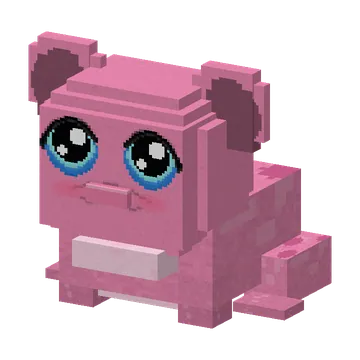
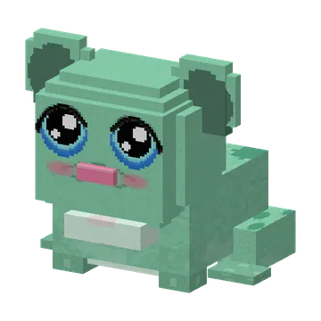
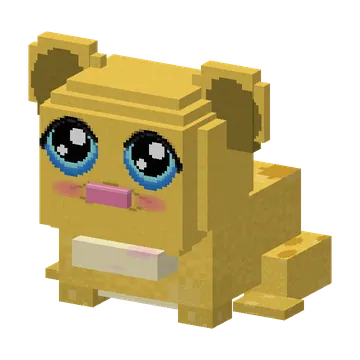

Kwaak-guh! Hupt rond in het Kaasmoeras, in roze, mint of geel. Hapt kaasmotten weg en spuugt dan een gloeiende motknabbel uit. Lust ook kaasknabbels.
Kikkerguh
A guh that is a frog: the real guh head with its two big round ears, glossy guh eyes, a tiny snoet and a blush, on a spotted frog body with frog legs, in pink, mint or yellow. Always sweet. Hops, swims, croaks (its throat puffs up) and snaps up kaasmotten with its long tongue: then it spits out a glowing motknabbel in its own colour (the froglight of the guhs). Lure and breed with kaasknabbels; a baby gets the colour of one of its parents. Guhdex: "Kwaak-guh!"
Een guh die een kikker is: de echte guhkop met twee grote ronde oren, glanzende guhogen, een klein snoetje en blosjes, op een gespikkeld kikkerlijfje met kikkerpootjes, in roze, mint of geel. Altijd lief. Hupt, zwemt, kwaakt (zijn keeltje blaast op) en hapt met zijn lange tong kaasmotten weg: dan spuugt hij een gloeiende motknabbel uit in zijn eigen kleur (de froglight van de guhs). Lokken en fokken met kaasknabbels; een kikkerguhtje krijgt de kleur van een van zijn ouders. Guhdex: "Kwaak-guh!"
- HealthLevens
- 10
- TemperHumeur
- always friendlyaltijd lief
The KikkerguhDe Kikkerguh
"A guh that is a frog": the real guh head with two big round ears, glossy guh eyes, a small snoet and blush, on a spotted frog body with frog legs. Still pink, mint or yellow, and still hopping, croaking and catching kaasmotten.
"Een guh die een kikker is": de echte guhkop met twee grote ronde oren, glanzende guhogen, een klein snoetje en blosjes, op een gespikkeld kikkerlijfje met kikkerpootjes. Nog steeds roze, mint of geel, en nog steeds huppend, kwakend en kaasmotten happend.
Where it spawnsWaar hij spawnt
| BiomesBiomen | GroupGroep | WeightGewicht | Group sizeGroepsgrootte |
|---|---|---|---|
| Kaasmoeras | animaldier | 45 | 2–4 |
PicturesPlaatjes


